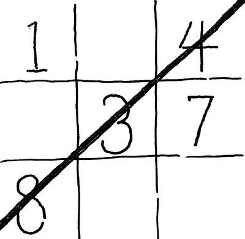

 Tic-Tac-Math is a lot like Tic-Tac-Toe. The game is played on a 3x3 grid; players take turns marking one cell at a time. The difference is that instead of placing Xs and Os on the grid, the players place the numbers 1 to 9. And, instead of trying to make a row, column, or diagonal filled with 3 Xs or 3 Os, the players try to make a row, column, or diagonal whose cells sum to 15. One wrinkle: each number can only be placed ONCE. Play a couple games with a classmate. (You'll notice that while the game resembles Tic-Tac-Toe, the playing strategy is quite different.)
In this exercise, you'll modify my simple implementation of this game. Download the files Board.java and TicTacMath.java. Put them in an appropriate folder (maybe a folder called "Exercise1" inside your "CISC3115" folder). Use javac to compile them, and java to run the program (what commands, exactly, should you use?)
As you play the game, you should notice that the basic game logic (you can't play twice in one square, you can't play the same number twice, wins are correctly detected) works, but there are still some problems. For example, the game doesn't make it very easy to visualize the state of the board. You may also find some obnoxious problems with the game flow.
If you haven't already, take a look at the code and get a sense of how it's organized. What are the two classes each responsible for doing? Which class should have the behavior of providing a visual summary of the state of the board? And what's the "cause" of any other problems you detect?
Fix all the problems! This shouldn't take much more than about 20 lines. You shouldn't need to make big changes to the existing class design--at most, you might want to add a method; the rest of your work should just be modifying some existing methods.